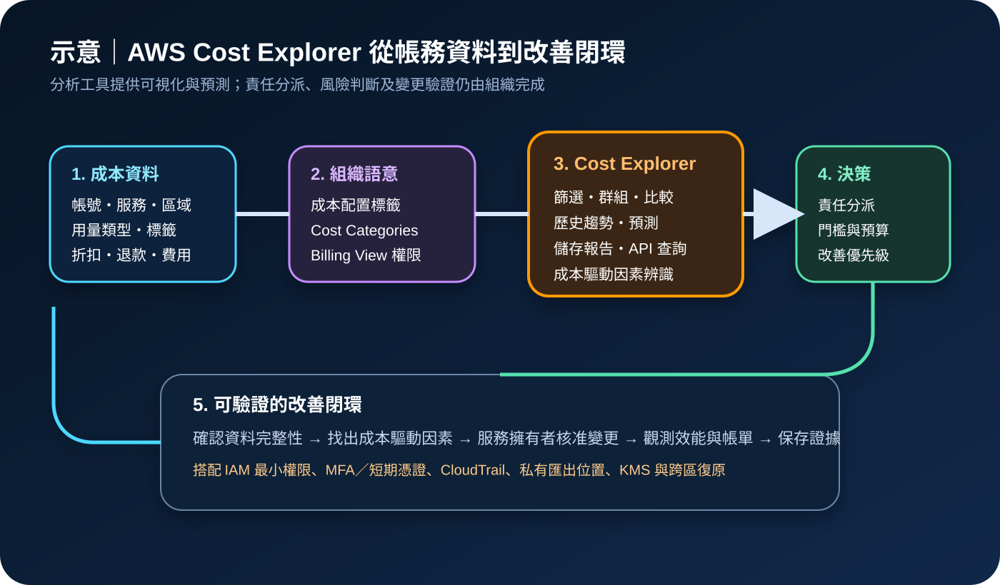

AWS Cost Explorer：成本分析、預測與權限治理
AWS Cost Explorer 是 AWS Billing and Cost Management 的互動式成本分析工具，可依服務、帳號、區域、用量類型、標籤與成本類別篩選或群組成本和用量，並提供比較、預測、儲存報告與 API。它適合找出成本驅動因素與分攤責任，但不會直接阻止支出、修復資源或取代發票、AWS Budgets、Cost Anomaly Detection 與詳細資料匯出。
作者：Dr. William｜查閱與發布：2026-11-12
服務定位
AWS Cost Explorer 用於互動式探索 AWS 成本與用量。管理帳號可分析整個組織或成員帳號，使用者可選擇時間範圍、粒度、指標、篩選條件與群組維度，建立及儲存報告，也可透過 Cost Explorer API 將查詢整合到內部 FinOps 儀表板。
Cost Explorer 著重分析；AWS Budgets 著重門檻與通知，Cost Anomaly Detection 著重異常偵測，Data Exports／Cost and Usage Report 著重明細資料交付，Cost Optimization Hub 與 Trusted Advisor 著重改善建議。治理流程應先定義問題，再選擇正確工具。
核心概念與服務邊界
分析構件
- 時間與粒度：依功能選擇月、日或可用的小時粒度。
- 篩選與群組：依服務、帳號、區域、用量類型、標籤或成本類別切分。
- 成本指標：依目的選擇未混合、攤銷或其他可用成本檢視。
- 比較與預測：觀察期間差異、趨勢與未來支出區間。
- 儲存報告：保存查詢條件，讓固定會議使用一致口徑。
治理構件
- 成本配置標籤：啟用後才能依業務維度分析，且不會回溯修補所有歷史資料。
- Cost Categories：把帳務維度映射為團隊、產品、環境或客戶。
- Billing View：限制不同角色可見的成本資料範圍。
- IAM：以
ce動作與 Billing 權限控制查詢和管理能力。 - 資料延遲：成本資料至少每日更新，重大決策須記錄資料截止時間。
適合與不適合的使用情境
適合
- 找出某月成本增加主要來自哪個服務、帳號、區域或用量類型。
- 比較正式、測試與共享環境的成本趨勢，建立 showback 或 chargeback 依據。
- 追蹤 Savings Plans、Reserved Instances、資料傳輸或特定服務的使用變化。
- 建立每週或每月固定 FinOps 報告，讓服務擁有者確認成本與業務指標。
- 以 API 將受控成本查詢整合到內部儀表板或工單流程。
不適合或不能單獨完成
- 要求秒級或分鐘級的即時成本告警與資源遙測。
- 未設定 Budgets 或 Anomaly Detection，卻期待 Cost Explorer 自動阻止超支。
- 需要逐筆發票對帳、稅務文件或完整資源級明細時，只依賴圖表。
- 標籤與帳號結構混亂時，直接把群組結果當成精確部門成本。
- 未經服務擁有者驗證就依成本下降目標刪除、縮小或停用正式資源。
示意故事案例：SaaS 平台的成本責任分派
以下為示意案例，不代表特定企業或正式部署。 一家 SaaS 公司發現 AWS 月成本連續增加，但財務報表只能看到整體帳單。平台團隊先要求所有新資源使用應用、環境、擁有者與成本中心標籤，並用 Cost Categories 把共享平台費用分到產品線。管理帳號建立受限 Billing View，讓各產品負責人只看到授權範圍。
FinOps 團隊在 Cost Explorer 比較本月與上月，依服務和用量類型逐層分析，發現成長主要來自跨區資料傳輸與測試帳號的閒置運算。每個發現項目都建立責任人、預估影響、變更風險與驗證條件。測試環境先調整排程，資料傳輸則由架構團隊確認流量路徑，不直接以成本理由關閉跨區備援。
變更完成後，團隊同時檢查 CloudWatch 效能、可用性、客服事件與下一個帳務更新週期的 Cost Explorer 報告。只有在服務指標無退化且成本資料完成更新後，改善項目才關閉。

建置與運作流程
- 由管理帳號依官方程序啟用 Cost Explorer，記錄啟用者與資料準備時間。
- 盤點 Organizations、帳號、付款關係、共享服務、資料分級與服務擁有者。
- 透過 IAM Identity Center 或聯合身分提供存取，要求 MFA 與短期憑證。
- 分離查看成本、建立報告、管理偏好、使用 API 與管理 Billing View 的權限。
- 定義帳號、標籤、Cost Categories 與共享成本分攤規則，建立資料品質門檻。
- 選定未混合、攤銷或其他成本指標，將統一口徑寫入報告說明。
- 建立服務、帳號、區域、用量類型與成本中心等標準報告。
- 記錄資料截止時間、折扣、退款、稅費與信用額是否納入。
- 為 API 設定查詢範圍、快取、分頁、配額、成本上限與錯誤處理。
- 把重大變化轉成有責任人、風險、期限、回復與驗證條件的工作項目。
- 以 CloudWatch、服務原生指標、發票或 Data Exports 交叉驗證。
- 使用 CloudTrail 記錄支援的 Billing and Cost Management 操作並定期覆核。
- 每月檢查標籤涵蓋率、未分配成本、共享成本規則、報表擁有者與過期權限。
成本、可用性與維運考量
Cost Explorer 主控台的標準使用通常不另外計費；API 查詢依請求計價，分頁也可能形成額外請求。小時粒度及資源級資料會依 AWS 當期定價產生成本。自動化應避免高頻、重複且無快取的查詢，並以查詢目的、日期範圍與群組維度控制用量。
成本資料至少每日更新，啟用後目前月份資料通常約一天可見，較長歷史資料準備需要更多時間。Cost Explorer 的可用性不應成為正式服務運作依賴；若報表暫時不可用，工作負載仍應持續運作，FinOps 流程可使用最近成功匯出、發票與 Data Exports 作為替代。
成本最佳化必須同時評估可用性、效能、安全與復原目標。縮容、停止測試環境、刪除快照、調整資料保留或取消跨區設計，都可能降低韌性。每項改善都需有變更窗口、回復方法及 CloudWatch 驗證。
AWS Cost Explorer 特有資安風險與控制
- 帳務資料過度揭露：使用 Billing View 與 IAM 最小權限限制帳號、折扣、信用額、產品及客戶成本可見範圍。
- 管理帳號權限集中：避免 root 日常操作；管理者使用受管裝置、MFA、短期憑證與分離角色。
- 權限資源層級有限：部分 Cost Explorer 動作不支援完整資源層級限制，需搭配明確角色、SCP、permission boundary 與定期存取覆核。
- API 大量查詢與費用濫用：限制可呼叫主體，設定快取、配額、成本告警與異常監控。
- 標籤洩露敏感資訊：標籤不得放入客戶姓名、電子郵件、credential、Access Key、Secret Key、Token、密碼或 cookie。
- 報告分享造成外洩：匯出檔只存於啟用 Block Public Access 的私有 S3，使用 KMS、版本、生命週期與存取記錄。
- 錯誤成本歸屬：監控標籤涵蓋率、未分配成本與 Cost Categories 規則變更，重要分攤需雙人覆核。
- 機密寫入整合：內部儀表板所需機密存於 Secrets Manager／Parameter Store，不寫入程式碼、查詢參數或日誌。
- 公開網路與終端風險：人員從企業受管網路與端點存取 Billing 主控台；下載檔案納入 DLP 與裝置加密。
- 稽核涵蓋誤解：確認 CloudTrail 實際支援的 Billing and Cost Management 事件，不以事件歷程取代完整報表變更紀錄。
- 單一帳務視圖失效：保留最近成功報表、Data Exports 與發票，依保存政策備份並測試跨帳號或跨區復原。
共同責任邊界
AWS 負責 Cost Explorer 受管服務、帳務資料處理、支援的分析引擎、圖表、API、預測、Billing View 能力及 AWS 雲端底層安全。AWS 也負責依官方文件提供資料更新與服務功能。
客戶負責啟用服務、設計 Organizations 與成本分類、設定 IAM、MFA／短期憑證、限制公開與外部分享、保護匯出資料、管理 KMS 與機密、解讀資料延遲與分攤口徑、核准改善變更、以 CloudTrail／CloudWatch 監控、備份報表與跨區復原，並承擔最終財務、可用性、法規及風險決策。
上線與維運可執行檢查清單
- □ 已由正確管理帳號啟用 Cost Explorer，並記錄資料準備狀態。
- □ 已盤點帳號、付款關係、服務擁有者、共享成本與資料敏感度。
- □ 所有人員均使用聯合身分、MFA 與短期憑證，root 不用於日常操作。
- □ 檢視、報告、API、偏好與 Billing View 權限已依職責分離。
- □ 已確認哪些動作不支援資源層級限制並設置補償控制。
- □ 成本配置標籤與 Cost Categories 有擁有者、變更流程與品質門檻。
- □ 報告清楚標示成本指標、日期範圍、粒度、資料截止與折扣口徑。
- □ 退款、信用額、稅費、共享成本與未分配成本均有處理規則。
- □ API 自動化已設快取、分頁上限、配額、錯誤處理與成本告警。
- □ 匯出檔案位於私有 S3，啟用 Block Public Access、KMS、版本與生命週期。
- □ 標籤、報告與日誌不含 credential、Access Key、Secret Key、Token、密碼或 cookie。
- □ 支援的 Billing 操作已由組織層級 CloudTrail 記錄並集中保存。
- □ CloudWatch 或工單流程可追蹤資料延遲、查詢失敗與改善項目。
- □ 每項成本改善都已評估效能、可用性、安全、備份與跨區復原。
- □ 變更後已等待帳務更新並以服務指標、發票或 Data Exports 交叉驗證。
- □ 已保存最近成功報表與分攤規則，並測試帳務資料替代與復原流程。
AWS 官方一手來源
- AWS Cost Explorer 產品頁（查閱：2026-11-12）
- Analyzing your costs with AWS Cost Explorer（查閱：2026-11-12）
- Enabling Cost Explorer（查閱：2026-11-12）
- Controlling access to Cost Explorer（查閱：2026-11-12）
- How AWS Cost Management works with IAM（查閱：2026-11-12）
- Filtering data in Cost Explorer（查閱：2026-11-12）
- Forecasting with Cost Explorer（查閱：2026-11-12）
- Saving Cost Explorer reports（查閱：2026-11-12）
- AWS Cost Explorer Pricing（查閱：2026-11-12）
- AWS Cost Explorer Service API Reference（查閱：2026-11-12）
- Logging Billing and Cost Management API calls with AWS CloudTrail（查閱：2026-11-12）
- Organizing and tracking costs using cost allocation tags（查閱：2026-11-12）
- Managing AWS Cost Categories（查閱：2026-11-12）
- AWS Shared Responsibility Model（查閱：2026-11-12）
內容說明
本文依查閱日可用的 AWS 官方文件整理，作為基礎學習與架構討論材料；實際作業仍須依最新功能、資料範圍、定價、Organizations 結構、IAM 政策、Billing View、折扣與分攤規則、資料更新時間及組織財務治理程序調整。